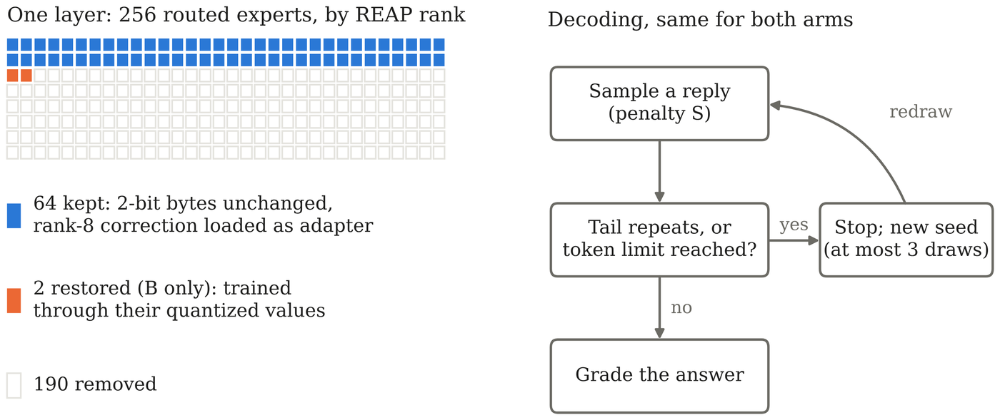

A shrunken orchestra keeps repeating the same bar. Before rehearsing for weeks, try the cheap fix: when you hear the repeat, stop and start the piece over. Only then ask whether extra rehearsal still helps, and measure it against an orchestra that is also allowed to restart.
인원을 줄인 오케스트라가 같은 마디를 계속 반복한다. 몇 주씩 연습하기 전에 싼 방법부터 써 보자. 반복이 들리면 멈추고 처음부터 다시 연주하는 것이다. 그다음에야 추가 연습이 여전히 도움이 되는지 묻는다. 비교 대상도 다시 시작할 수 있는 오케스트라여야 한다.
What breaks: pruning, not bits무엇이 망가지나: 비트가 아니라 가지치기
Going from 4 to 2 bits costs almost nothing. Removing three quarters of the experts costs a third of the solved problems.
4비트에서 2비트로 내려도 거의 잃지 않는다. 전문가를 4분의 3 제거하면 푼 문제의 3분의 1을 잃는다.
How it repairs: three steps of rising cost고치는 방법은 비용이 오르는 세 단계
The quantized bytes of the kept experts never change. Everything is added at decode time or as a load-time adapter.
남은 전문가의 양자화된 바이트는 그대로 둔다. 모든 수정은 디코딩 단계나 로드 시점 어댑터로 더한다.

- Penalize repeats.반복 벌점.A presence penalty over a 20K-token window, since loop periods are far longer than the default 64-token window.2만 토큰 창의 등장 벌점을 쓴다. 루프 주기가 기본 64토큰 창보다 훨씬 길기 때문이다.
- Stop and redraw.멈추고 다시 뽑기.If the tail repeats an earlier stretch, stop and resample with a new seed, up to three draws. No weights change.끝부분이 앞 구간을 되풀이하면 멈추고 새 시드로 다시 뽑는다. 최대 세 번이며 가중치는 바뀌지 않는다.
- Fit corrections.보정 학습.Layer by layer, fit rank-8 corrections and two restored experts to the unpruned expert block, using the pruned model's own long reasoning as input.층마다 가지치기 모델 자신의 긴 추론을 입력으로, rank-8 보정과 되살린 전문가 두 개를 원래 전문가 블록의 출력에 맞춘다.
Results: retry is worth more than the weights결과는 가중치보다 큰 재시도의 효과
On the untouched final set, redrawing adds 15 to 16 problems to either arm, more than the 12 the adapter adds over the baseline.
손대지 않은 최종 문제에서 다시 뽑기는 두 쪽 모두에 15–16문제를 더한다. 어댑터가 기준선보다 더 푸는 12문제보다 많다.
| Set | n | Baseline | + adapters | Δ pp [95% CI] |
|---|---|---|---|---|
| Development (reused) | 120 | 88 | 101 | +10.8 [+3.3, +18.3] |
| Final, first draw only | 130 | 89 | 100 | +8.5 [+0.8, +16.2] |
| Final, up to 3 draws | 130 | 104 | 116 | +9.2 [+3.1, +15.4] |
| HumanEval+ (guard) | 164 | 144 | 145 | +0.6 |
| MBPP+ (guard) | 378 | 276 | 269 | −1.9 |
When a compressed reasoning model loops, detect the repeat and redraw before you train anything, and make any trained fix beat that baseline. Here the adapter fixed more wrong answers than loops.압축한 추론 모델이 루프에 빠지면, 무엇을 학습하기 전에 반복을 감지해 다시 뽑자. 학습으로 고친 결과는 이 기준선을 넘어야 한다. 이 논문에서 어댑터는 루프보다 틀린 답을 더 많이 고쳤다.
One model, one pruning ratio, one quantization, one benchmark family, one fit. The adapter bundles corrections with two restored experts, so the source of the gain is unknown, and MBPP+ shows no gain.모델 하나, 가지치기 비율 하나, 양자화 하나, 벤치마크 계열 하나, 학습 한 번이다. 어댑터는 보정과 되살린 전문가 두 개를 묶었기 때문에 이득이 어디서 오는지 모르고, MBPP+에서는 이득이 없다.